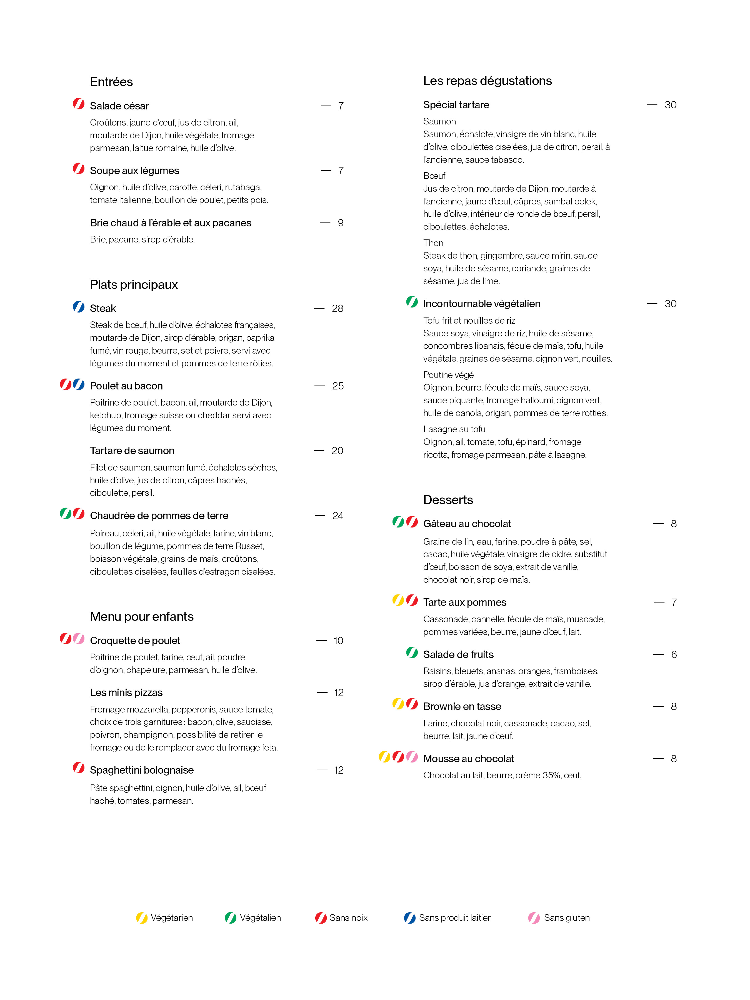
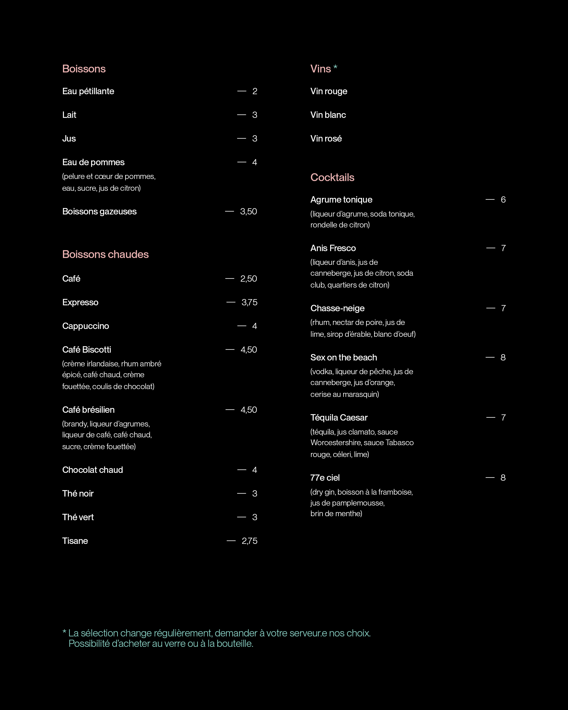

.
Entrées
Salade césar — 7
Croûtons, jaune d'oeuf, jus de citron, ail, moutarde de Dijon, huile végétale, fromage parmesan, laitue romaine.
Soupe aux légumes — 7
Oignon, huile d'olive, carotte, céleri, rutabaga, tomates italiennes, bouillon de poulet, petits pois.
Brie chaud à l'érable et aux pacanes — 9
Brie, pacanes, sirop d'érable.
Plats principaux
Steak — 28
Steak de boeuf, huile d'olive, échalotes françaises, moutarde de Dijon, sirop d'érable, origan, paprika fumé, vin rouge, beurre, sel et poivre, servi avec légumes du moment et pommes de terre rôties.
Poulet au bacon — 25
Poitrine de poulet, bacon, ail, moutarde de Dijon, ketchup, fromage suisse ou cheddar servi avec légumes du moment.
Tartare de saumon — 20
Filet de saumon, saumon fumé, échalotes sèches, huile d'olive, jus de citron, câpres hachés, ciboulettes, persil.
Chaudrée de pommes de terre — 24
Poireau, céleri, ail, huile végétale, farine, vin blanc, bouillon de légume, pommes de terre Russet, boisson végétale, grains de maïs, croûtons, ciboulettes ciselées, feuilles d'estragon ciselées.
Menu pour enfants
Croquettes de poulet — 10
Poitrine de poulet, farine, oeuf, ail, poudre d'oignon, chapelure, parmesan, huile d'olive.
Les minis pizzas — 12
Fromage mozzarella, pepperonis, sauce tomate, choix de trois garnitures : bacon, olive, saucisse, poivron, champignon. Posiibilité de retirer le fromage ou de le remplacer avec du fromage feta.
Spaghettini bolognaise s — 12
Pâte spaghettini, oignon, huile d'olive, ail, boeuf haché, tomates, parmesan.
Les repas dégustations
Spécial tartare — 30
Saumon
(Saumon, échalotes, vinaigre de vin blanc, huile d'olive, ciboulettes ciselées, jus de citron, persil, moutarde à l'ancienne, sauce Tabasco.)
Boeuf
(Jus de citron, moutarde de Dijon, moutarde à l'ancienne, jaune d'oeuf, câpres, sambal œlek, huile d'olive, intérieur de ronde de boeuf, persil, ciboulettes, échalotes.)
Thon
(Steak de thon, gingembre, sauce mirin, sauce soya, huile de sésame, coriande, graines de sésame, jus de lime.)
Incontournable végétalien — 30
Tofu frit et nouilles de riz
(Sauce soya, vinaigre de riz, huile de sésame, concombres libanais, fécule de maïs, tofu, huile végétale, graines de sésame, oignon vert, nouilles.)
Poutine végé
(Oignon, beurre, fécule de maïs. sauce soya, sauce piquante, fromage halloumi, oignon vert, huile de canola, origan, pommes de terre rotties.)
Lasagne au tofu
(Oignon, ail, tomates, tofu, épinards, fromage ricotta, fromage parmesan, pâte à lasagne.)
Desserts
Gâteau au chocolat — 8
Graine de lin, eau, farine, poudre à pâte, sel, cacao, huile végétale, vinaigre de cidre, substitut d'oeuf, boisson de soya, extrait de vanille, chocolat noir, sirop de maïs.
Tarte aux pommes — 7
Cassonade, cannelle, fécule de maïs, muscade, pommes variées, beurre, jaune d'oeuf, lait.
Salade de fruits — 6
Raisins, bleuets, ananas, oranges, framboises, sirop d'érable, jus d'orange, extrait de vanille.
Brownie en tasse — 8
Farine, chocolat noir, cassonade, cacao, sel, beurre, lait, jaune d'oeuf.
Mousse au chocolat — 8
Chocolat au lait, beurre, crème 35%, oeuf.
Boissons
Eau pétillante — 2
Lait — 3
Jus — 3
Pomme & orange.
Eau de pomme — 4
Pelure & cœur de pommes, eau, sucre, jus de citron.
Boissons gazeuses — 3,50
Pepsi, Orangeade, Canada Dry, & 7Up
Boissons chaudes
Café — 2,50
Expresso — 3,75
Cappuccino — 4
Café Biscotti — 4,50
Crème irlandaise, rhum ambré épicé, café chaud, crème fouettée, coulis de chocolat.
Café brésilien — 4,50
Brandy, liqueur d'agrumes, liqueur de café, café chaud, sucre, crème fouettée.
Chocolat chaud — 4
Thé noir — 3
Thé vert — 3
Tissane — 2,75
Vins
Vin rouge — Verre ou bouteille
Vin rosé — Verre ou bouteille
Vin blanc — Verre ou bouteille
* La sélection change régulièrement, demandez à votre serveur.e nos choix.
Cocktails
Agrumme tonique — 6
Liqueur d'agrumes, soda tonique, rondelle de citron.
Anis Fresco — 7
Liqueur d'anis, jus de canneberge, jus de citron, soda club, quartiers de citron.
Chasse-neige — 7
Rhum, nectar de poire, jus de lime, sirop d'érable, blanc d'oeuf.
Sex on the beach — 8
Vodka, liqueur de pêche, jus de canneberge, jus d'orange, cerise au marasquin.
Téquila Cæsar — 7
Téquila, jus clamato, sauce Worcestershire, sauce Tabasco rouge, céleri, lime.
77e ciel — 8
Dry gin, boisson à la framboise, jus de pamplemousse, brin de menthe.

